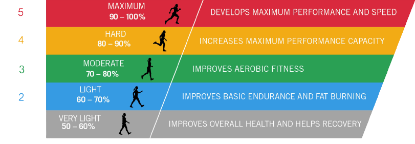

Projeto Escola Secundária do Cartaxo
A frequência cardíaca é o número de vezes que o coração bate por minuto.
Frequência cardíaca de treino (FCT) é calculada com base na frequência cardíaca de repouso (HRR) and e Frequência Cardíaca Máxima (MHR).
Existem várias fórmulas para determinar a FCT nas diferentes zonas de treino.
Neste artigo usaremos a mais comum, a Fórmula Karvoven.
A Fórmula Karvonen é uma fórmula matemática que ajuda a determinar sua frequência cardíaca alvo (HR) zonas de treino através da FC Pico e FC em Repouso.
FC = ((FC Máx. - FC in rest) × %Intensity ) + FC in rest
Calculadora Karkoven
Para facilitar a compreensão e a medição das várias zonas de treino,pode utilizar esta calculadora Com os resultados obtidos, pode procurar planos de treino específicos para os seus propósitos com base nestas 5 Zonas.